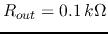
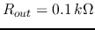
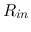
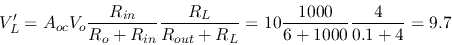
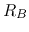
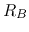
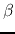
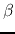

Problem 1. (25 points)
Answer the following questions regarding the two circuits shown
below, where ,
,
 ,
,
, and
,
,
, and  .
.
- Represent the voltage
 across the load
across the load  in terms of
all of the parameters given in the circuit shown on the left of the
figure. Then obtain the numerical value of by substituting the
specific values of the parameters into the expression.
in terms of
all of the parameters given in the circuit shown on the left of the
figure. Then obtain the numerical value of by substituting the
specific values of the parameters into the expression.
- Repeat the above for the circuit shown on the right of the
figure, in which a voltage-amplification circuit is inserted between
the source and the load, characterized by three parameters: (a) the
input resistance , (b) the output resistance
 , and
(c) the open-circuit voltage gain
, and
(c) the open-circuit voltage gain  .
.

Solution:
-
-
-

- Problem 2. (35 points)

Based on the transsitor circuit shown above, do the following:
- Find the expressions of
 ,
,  , and
, and  , all in terms
of the circuit parameters (
, all in terms
of the circuit parameters ( , ,
, ,  ,
,  and ).
and ).
- Given
 , , and , find
so that the DC operating point is in the middle of the output
characteristic plot.
, , and , find
so that the DC operating point is in the middle of the output
characteristic plot.
- Draw the small signal model.
- Give the expressions of the three parameters: (1) input resistance,
(2) output resistance, and (3) open-circuit () voltage gain,
all in terms of the circuit parameter symbols , , ,
and (not their numerical values).
Solution:
Solving to get . For the rest see
here.
- Problem 3. (20 points)
Give the expression for the voltage gain
in terms of
the circuit parameters in the op-amp circuit below:
Solution:
Denote the voltage at the inputs of the op-amp by  . Then we have
. Then we have
Substituting the 2nd equation into the first, we get
- Problem 4. (20 points)
The output
 of the transistor circuit with a sinusoidal
input is plotted. As you can see, is distorted in either
of the two cases of (a) and (b). As the designer of the circuit, you
can change , and/or
of the transistor circuit with a sinusoidal
input is plotted. As you can see, is distorted in either
of the two cases of (a) and (b). As the designer of the circuit, you
can change , and/or  to avoid the distortion. Make
sure your answer is concise and to the point.
to avoid the distortion. Make
sure your answer is concise and to the point.

- What would you do to avoid distortion in (a) and why?
- What would you do to avoid distortion in (b) and why?

Hint: Draw the input and output characteristic plots of the transistor
circuit to visualize how each of the two types of distortion can be avoided.
Solution:
- Reduce , and/or increase .
- Increase , increase , and/or reduce .